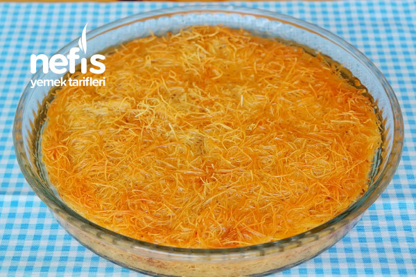

Kadayıf Tatlısı Yapılış Görüntüleri


🍴4-6 Kişilik, 🕓10dk Hazırlık 35dk Pişirme
Vazgeçilmezlerimiz arasında olan kadayıf tatlısını birde böyle deneyin. Özenle döşenmiş
kadayıfların arasına bolca koyacağınız ceviz ile lezzetini arttırabileceğiniz tepside kadayıf
tatlısı tarifimi mutlaka denemelisiniz. Yanına koyabileceğiniz 1 top dondurma ile hem içinizi
ferahlatacak hem de tatlı krizlerinize çare bulacaksınız. Misafirlerinize de ikram
edebileceğiniz, lezzeti ile dillere destan tatlımın her şeklini görmüşsünüzdür mutlaka. Bir de
benim yaptığım şeklini deneyin. Büyük küçük herkesin seveceği, yerken mutlu olacağınız
tepside kadayıf tatlısını yapmak için koşun mutfaklarınıza. Tarifimi denemeyi unutmayın.
Deneyeceklere şimdiden afiyet olsun.
• 500 gram taze tel kadayıf
• 200 gram eritilmiş tereyağı
• İrice çekilmiş 1 kase ceviz
Şerbeti için:
• 3 su bardağı toz şeker
• 4 su bardağı su
• Yarım limon suyu
•Tencere
•Karıştırma kabı
•Fırın kabı
1. İlk olarak şerbeti hazırlayarak ılınmaya bırakalım. Bunun için şeker ve suyu küçük bir
tencereye alalım.
2. Kaynamaya başladıktan 10 dk. sonra limon suyunu ekleyelim, 5 dakika daha kaynattıktan
sonra ocaktan alalım ve soğumaya bırakalım.
3. Derince bir kaba aldığımız tel kadayıfların üzerine eritilmiş ve ilk sıcağı çıkmış
tereyağı gezdirelim.
4. Güzelce harmanlanarak kadayıf tellerinin yağlanmasını sağlayalım.
5. Kadayıfın yarısını alalım ve küçük boy fırın kabına (ben küçük yuvarlak borcam kullandım)
yerleştirelim ve üzerine avuç içi ile bastırarak sıkışmasını sağlayalım.
6. Üzerine bol miktarda ceviz içi serpelim ve kalan kadayıfı cevizlerin üzerine yayalım.
Yine avuç içi ile güzelce bastıralım.
7. Tatlımızı 180°C önceden ısıtılmış fırında 40 dakika kadar güzelce kızartalım. Fırından
aldıktan sonra 5 dakika kadar ilk sıcağının çıkmasını bekleyelim.
8. İlk sıcaklığı çıktıktan sonra şerbetimizi gezdirerek her yerini ıslatalım. Şerbetin soğuk
olması önemli eğer sıcak olursa kadayıfı hamur yapabilir dikkat ediniz
9. Ardından şerbetini çekmesi için bir kaç saat dinlendirelim.
10. Şerbetini çeken tatlımızı ister kare iste pizza dilimi gibi kesebilirsiniz. Tepsim yuvarlak
olduğu için pizza dilimi şeklinde kestim.
11. Uygun bir servis tabağına alarak servis edelim. Afiyet olsun.
•Kadayıfın şerbetini ve tereyağını güzelce içine alması için didiklenmesi
gerekmektedir.
•Kadayıfın içerisine eritilmiş tereyağı eklenmelidir.
•Kadayıflar tepsiye her konulmasında üzerine bastırılarak sıkıştırılmalıdır.
•Tatlınızın üzerine dökeceğiniz şerbetin dökme esnasında soğuk olması
gerekmektedir. Böylece kadayıflarınız hamur olmaz.
Kadayıf tatlısının ilk sıcaklığının çıkmış, şerbetin ise soğuk olması gerekir. Şerbette sıcak
olursa tatlı hamur olacaktır. İkisinin de soğuk olması durumunda ise tatlı şerbeti çekmeyecektir.
Orta büyüklükteki 1 porsiyon kadayıf tatlısı yaklaşık olarak 244 kcal’dır. Şeker ve yağ
içerisinde fazla bulunduğu için şeker hastaları ve diyet yapanların dikkatli tüketmesi önerilir.
182 Deneyen Fotoğrafı Tümünü Gör →